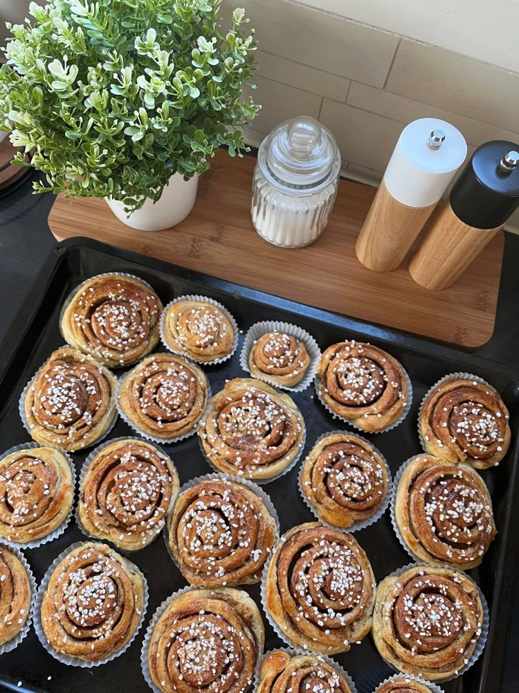
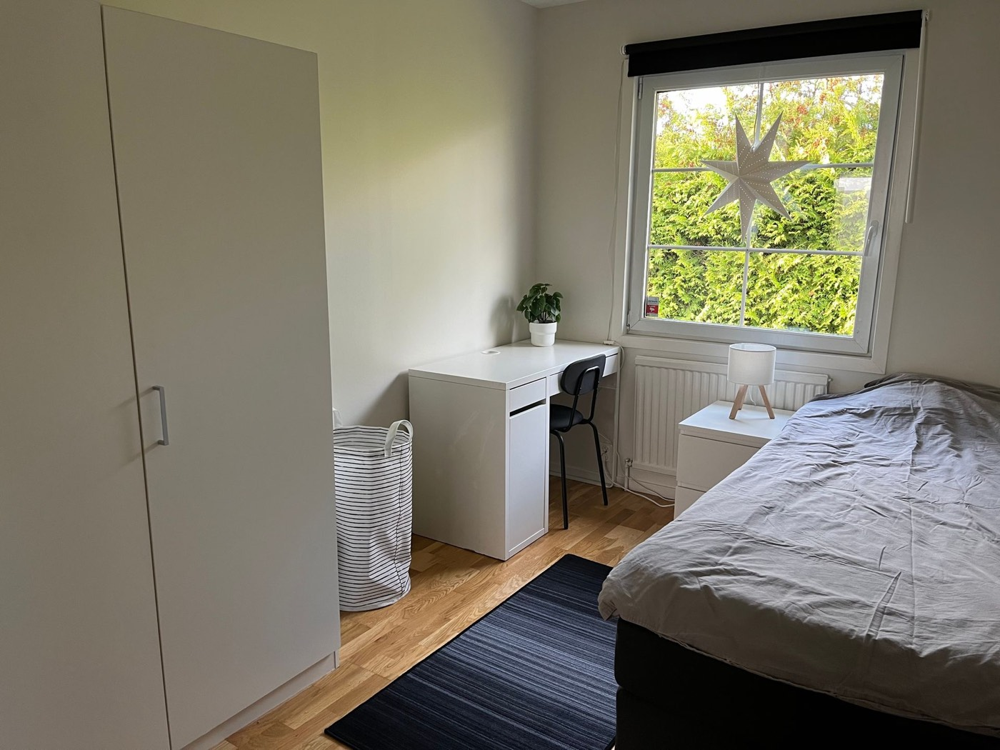
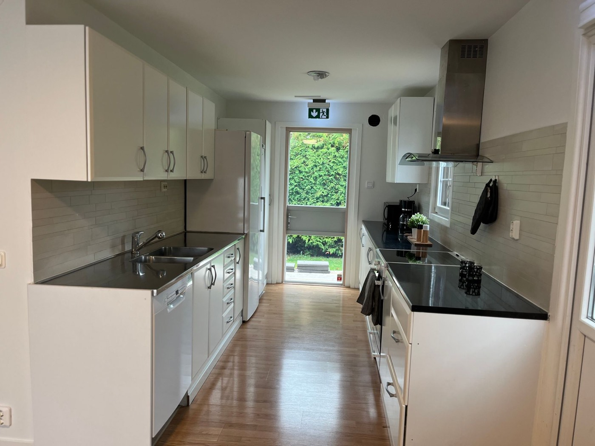
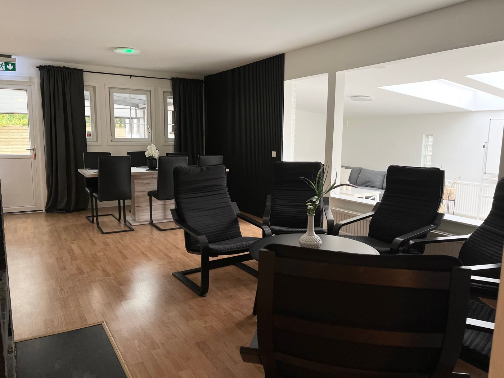
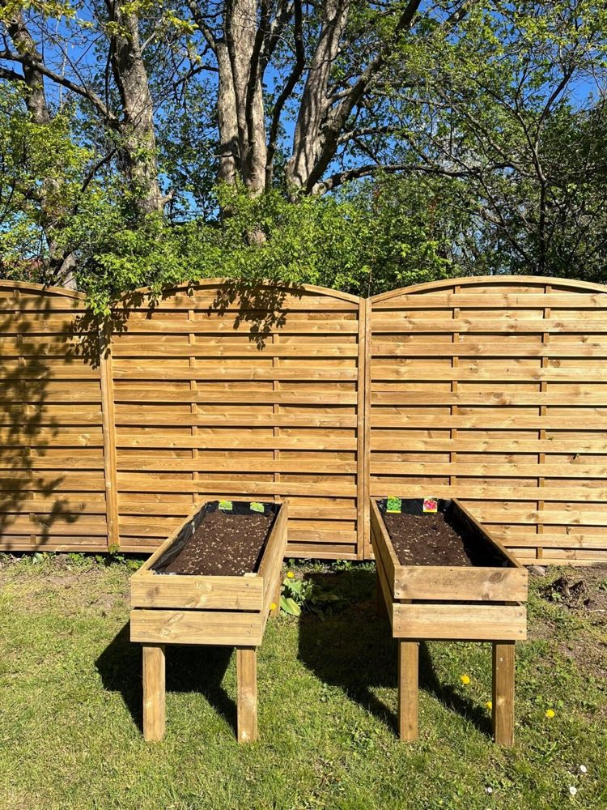

Psykolog
Via BUS-mottagningen erbjuds samtal inom ramen för placeringen — med snabb start och ett samlat team runt ungdomen.
Hörby, Skåne
Ett hemlikt behandlingshem för ungdomar 13–17 år, med tydlig struktur, hög personaltäthet och en lugn miljö nära naturen.
0
lediga platser just nu
Om enheten
Vinkelviken är ett hemlikt HVB i Hörby, mitt i Skåne. Här bor ungdomarna i en lugn, familjär miljö där vardagen är förutsägbar: gemensamma måltider, tydliga rutiner och vuxna som alltid finns i närheten.
Personalgruppen består av behandlingspedagoger och socionomer med lång erfarenhet av ungdomar med svår beteendeproblematik, neuropsykiatriska funktionsnedsättningar och psykiatriska tillstånd. Till verksamheten finns en psykolog knuten, vilket ger snabb tillgång till bedömningar och samtal inom ramen för placeringen.
Den höga personaltätheten gör att vi kan arbeta nära varje ungdom — och anpassa både krav och stöd efter dagsform.




Behandling & metoder
Varje behandling utformas individuellt utifrån socialtjänstens uppdrag. Grunden är alltid densamma: tydlighet, förutsägbarhet och trygghet — för det är genom goda relationer och egen delaktighet som förändring blir möjlig. Personalen är utbildad i följande metoder:
Stöd runt ungdomen
Runt varje ungdom finns ett nätverk av kompetenser som kopplas in utifrån behov och uppdrag.
Via BUS-mottagningen erbjuds samtal inom ramen för placeringen — med snabb start och ett samlat team runt ungdomen.
Vid behov genomförs neuropsykiatrisk utredning via samarbetande psykologtjänst, så att rätt stöd kan sättas in tidigt.
Vår sjuksköterska har bakgrund inom BUP, vuxenpsykiatri och somatisk vård och följer upp ungdomarnas hälsa löpande.
Vi arbetar aktivt med familj och nätverk — relationerna hemma är ofta en avgörande del av en hållbar förändring.
Enheten har en kontaktperson hos polisen och deltar i det lokala brottsförebyggande arbetet.
Utslussen planeras tillsammans med placerande kommun i god tid, med målet att övergången till nästa steg blir trygg och hållbar.

Vardag & fritid
En fungerande vardag är en del av behandlingen. Veckan har en fast rytm med skola, aktiviteter och återhämtning — och en aktiv fritid som ger nya sammanhang att lyckas i.
Kontakt
Ring oss gärna direkt vid en placeringsförfrågan — vi svarar på frågor om tillgänglighet, målgrupp och hur en placering hos oss går till.